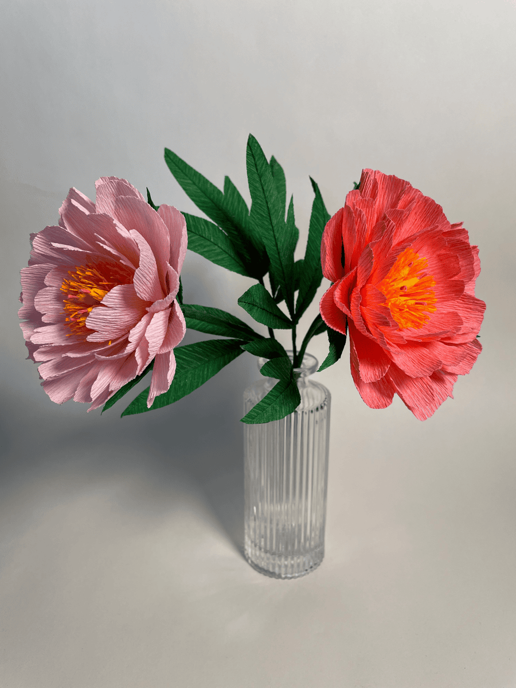
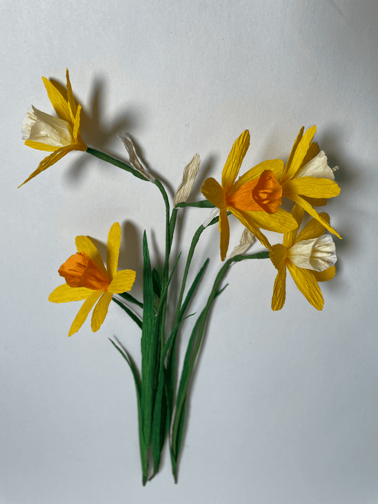
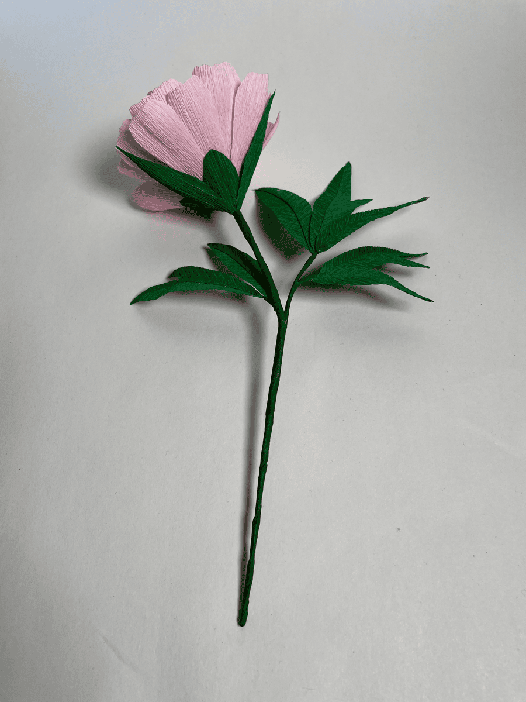
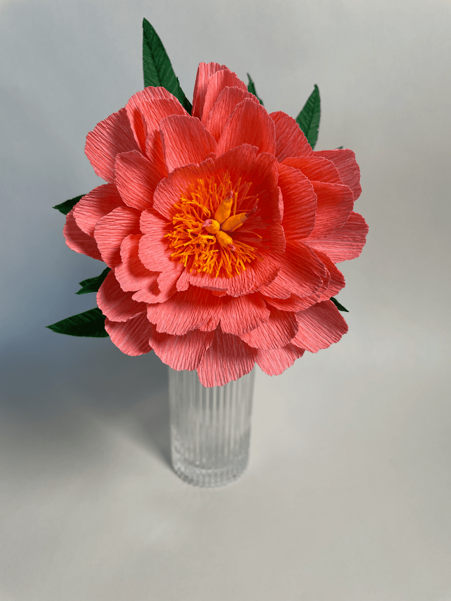
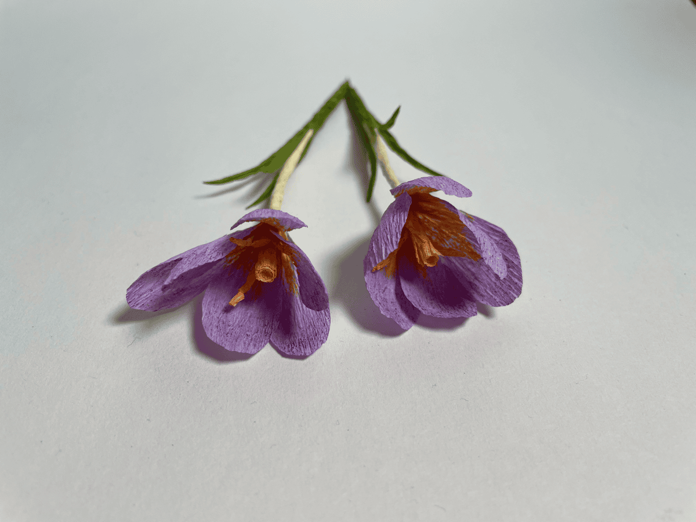
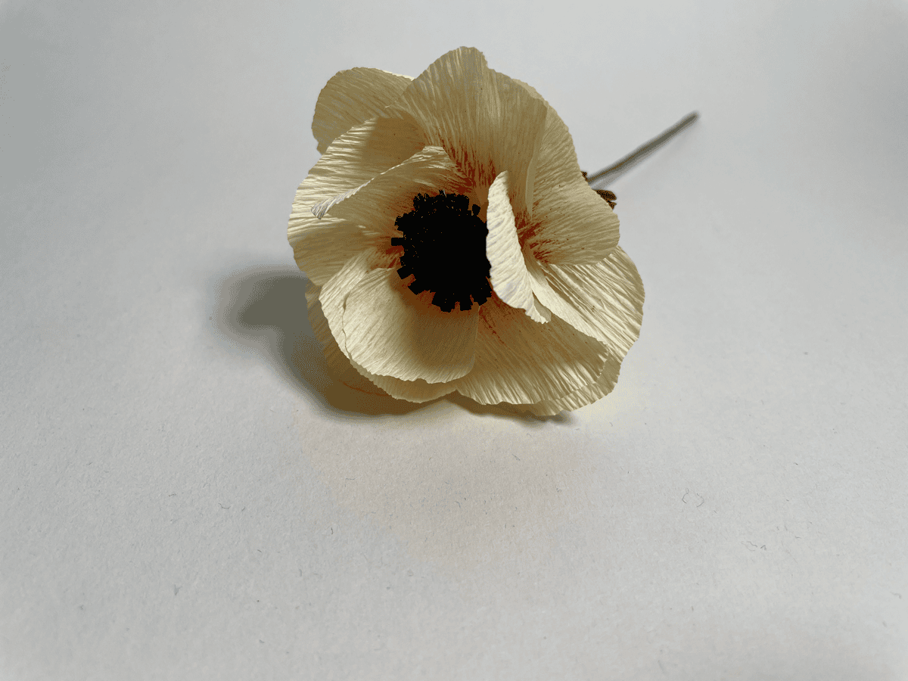
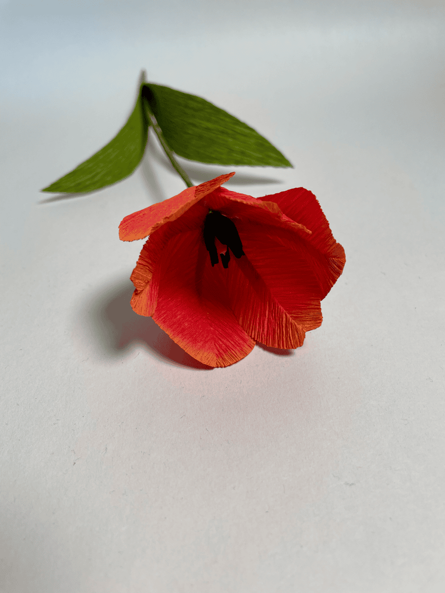
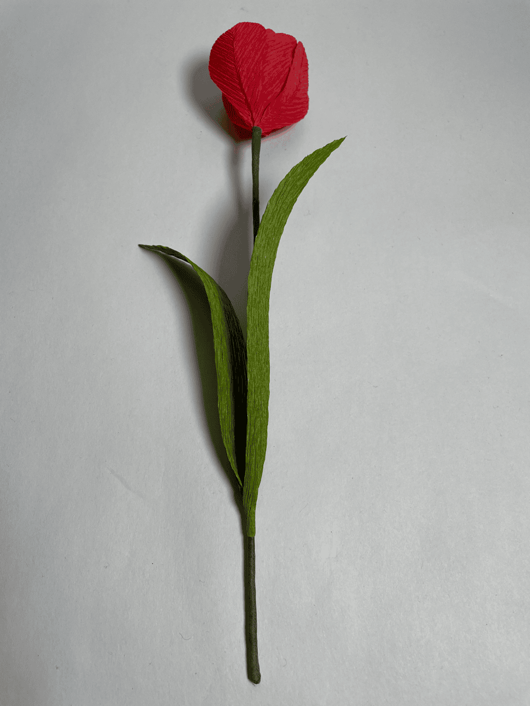
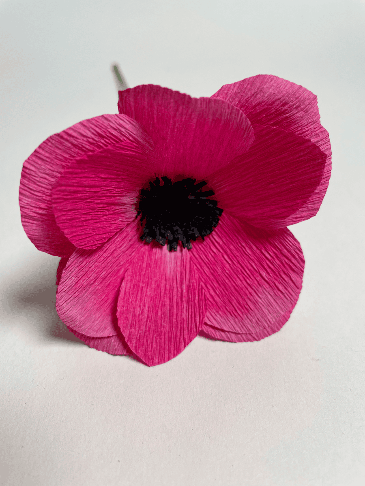

Each flower in The Petal Collection is meticulously crafted from Italian crepe paper, shaped petal by petal to capture the beauty of nature in a form that lasts forever. Our pieces make thoughtful gifts, stunning home accents, and unforgettable wedding details.
No two flowers are exactly alike — just like the real thing.

From delicate daffodils to lush peonies, every stem is hand-cut, dyed, and assembled in our studio. We use time-honoured techniques passed down through generations of paper artisans.
Perfect for those who appreciate the artistry in the everyday.

Explore our handcrafted paper flowers






